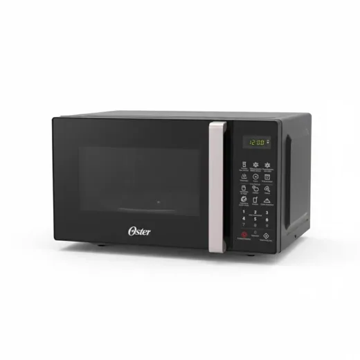
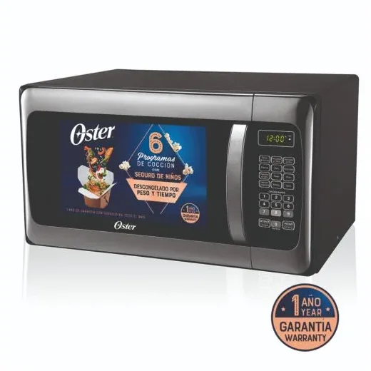
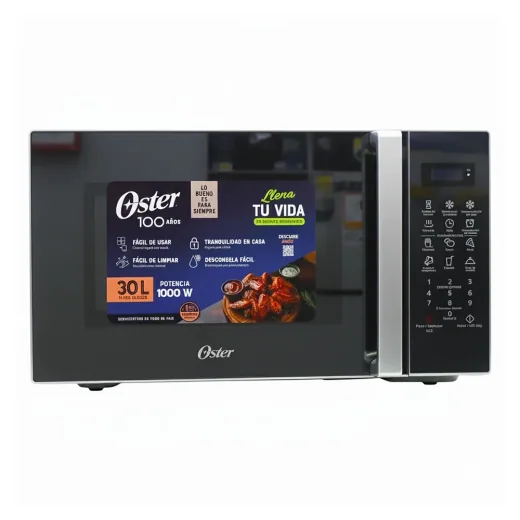
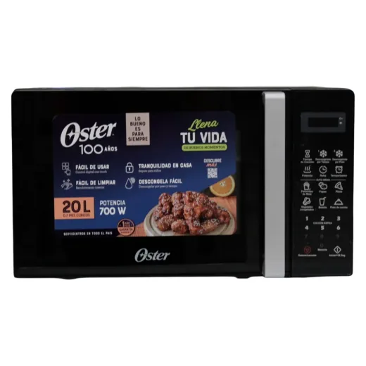
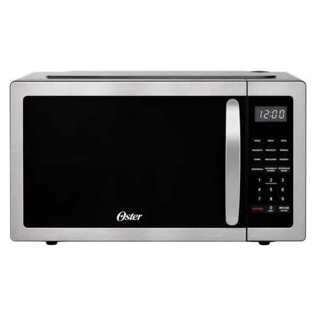
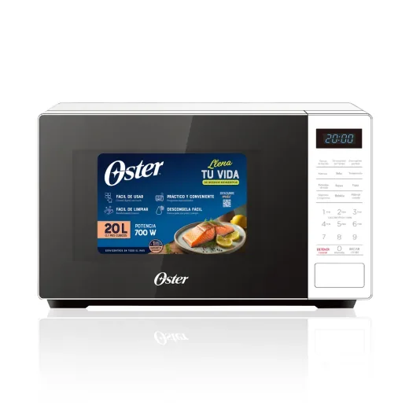
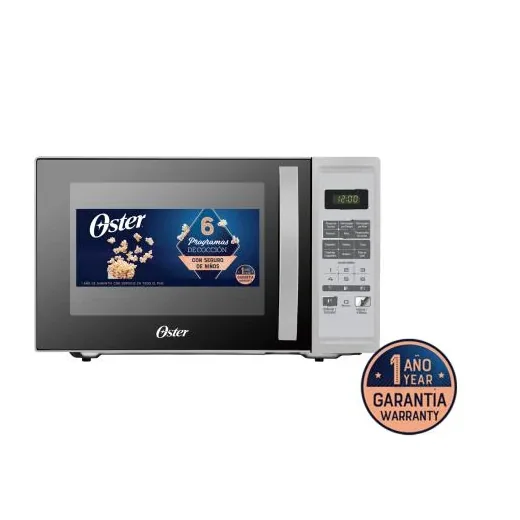
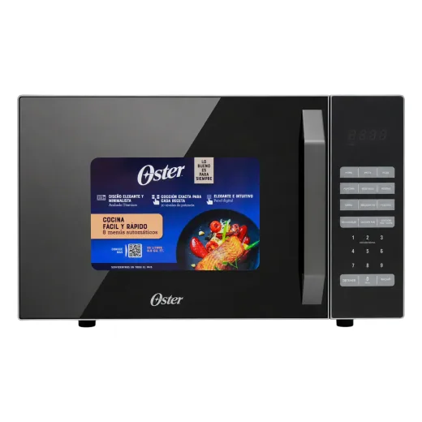
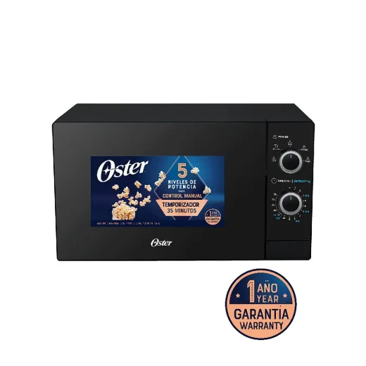

Precio en cada tienda
| Tienda | Precio | Antes | Disponibilidad | |
|---|---|---|---|---|
| Walmart | L 3,295 | — | Disponible | Ver en tienda › |
Precios referenciales tomados de cada tienda el 14 de noviembre de 2026. El precio válido es el que muestra la tienda al comprar.
Otros microondas Oster

Microondas Digital 1.1' Acero/NegroL 3,299.01En Lady Lee
Microondas Oster 1.1 pies cúbicosL 3,495En Walmart
Microondas Oster negro 0.7 pies cúbicos 20 LL 2,895En Walmart
Oster Microondas 1 1 FtL 2,845.25En Walmart
Microondas Oster OGGME2701 de 7 pies cúbicosL 2,800En Walmart
Microondas Digital 1.3' SilverL 3,799En Lady Lee
Microondas Oster de 0.9 pies cúbicos y capacidad de 25 LL 2,490En Walmart
Microondas Oster análogo de 0.7 pies cúbicos negroL 2,150En Walmart